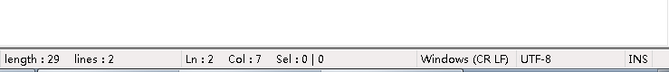
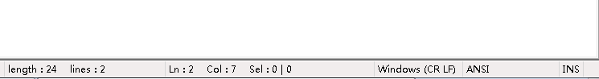

bat脚本中使用中文乱码
新建一个txt，改名为xxx.bat，编辑文件，写入：12@echo 一二三四五@pause
运行xxx.bat，显示为：12涓€浜屼笁鍥涗簲请按任意键继续. . .
原因是脚本文件使用的编码格式为utf8，只要改成ANSI编码即可。（使用的文本编辑器是Notepad++ v7.5.9）


再次运行xxx.bat，显示为：12一二三四五请按任意键继续. . .
使用echo输出空行
在echo后加.（英文句号）即可：1echo.